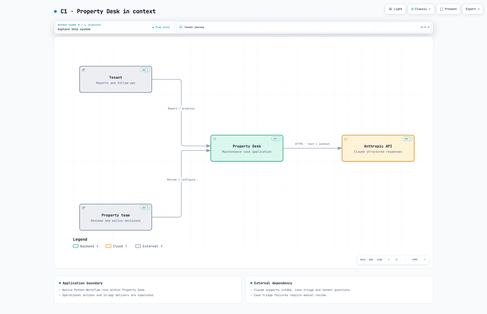
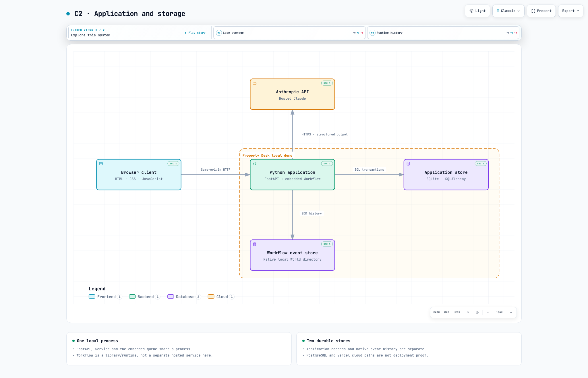
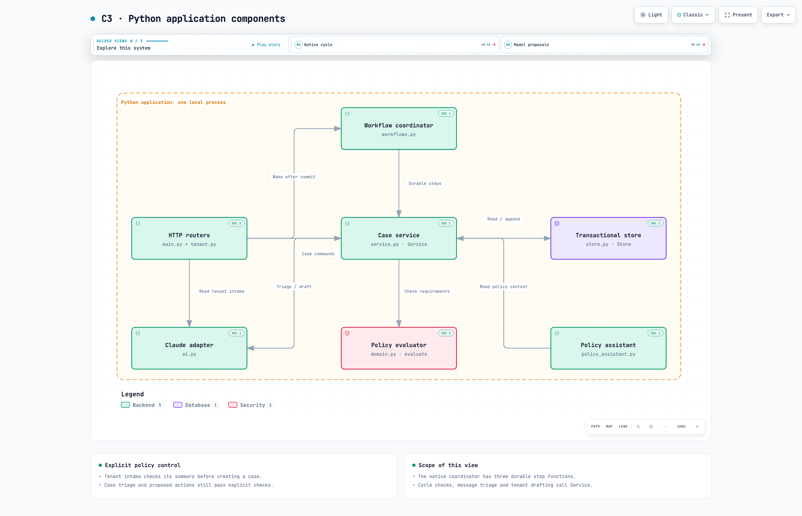
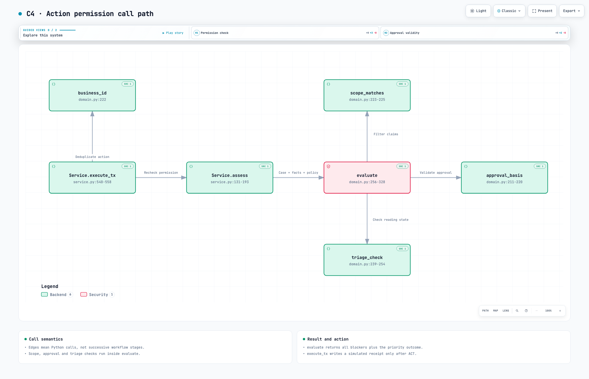
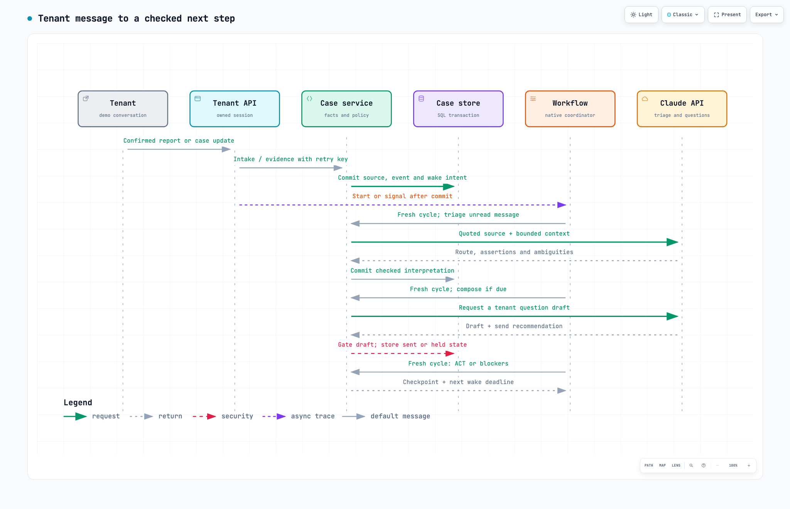
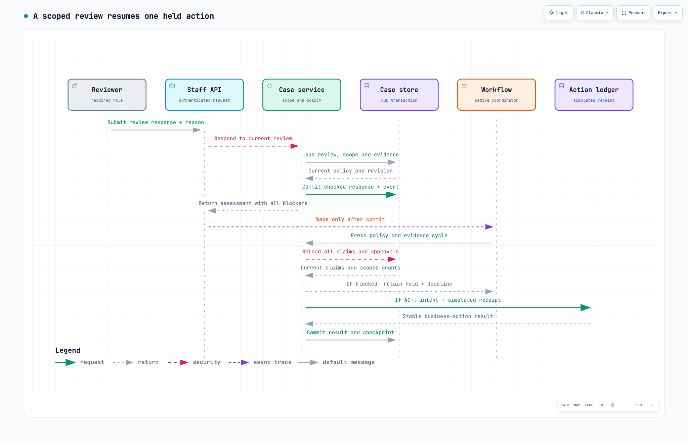
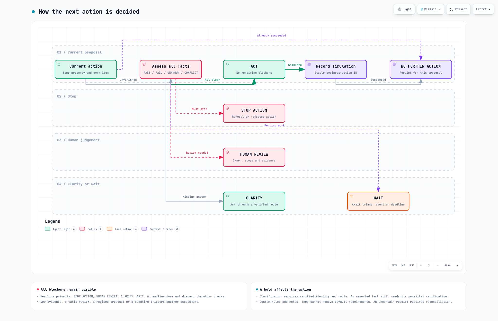
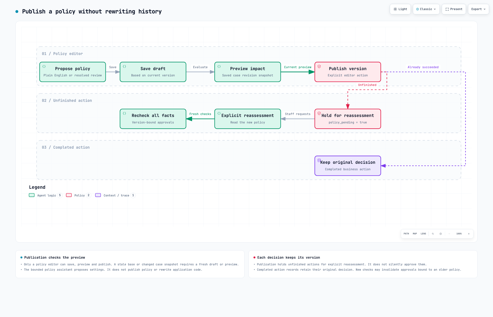
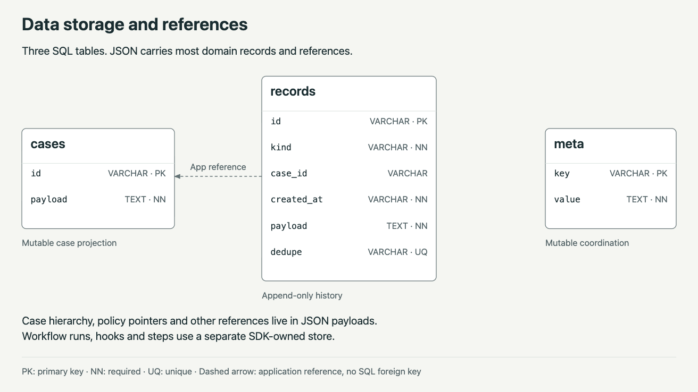
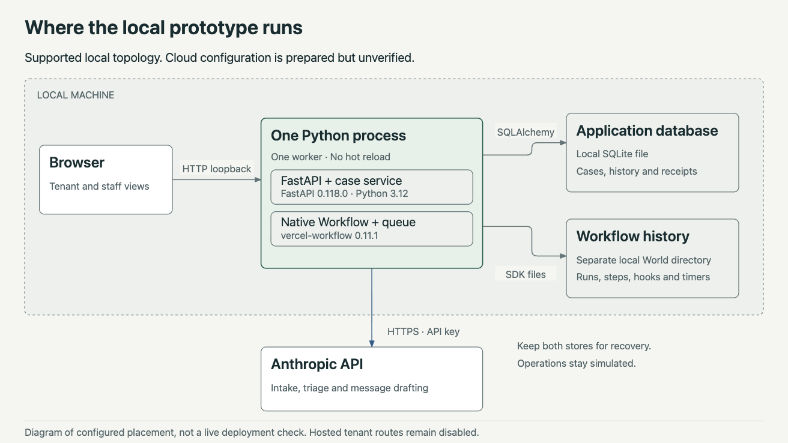

Property Desk / Architecture
One system. Ten useful views.
Understand the product boundary, follow a request and inspect the rules that decide what can happen next.
Source snapshot 2732af6 · Reviewed 10 October 2026 · Work in progress

C1
System context
People, product boundary and the external model API.
Open diagram
C2
Containers
The browser, Python application and two stores.
Open diagram
C3
Components
Module responsibilities and calls inside the application.
Open diagram
C4
Code
The actual functions that permit or hold an action.
Open diagram
Sequence
Tenant message
Stored evidence, Claude steps and fresh policy checks.
Open diagram
Sequence
Human review
A scoped decision, committed response and workflow resumption.
Open diagram
Flow
Action decision
Act, stop, review, clarify, wait or finish.
Open diagram
Flow
Policy publication
Draft, preview, publish and explicitly reassess.
Open diagram
Data
Storage
Three SQL tables and application-level references.
Open diagram
Deployment
Local runtime
One process, two persistent stores and external inference.
Open diagram